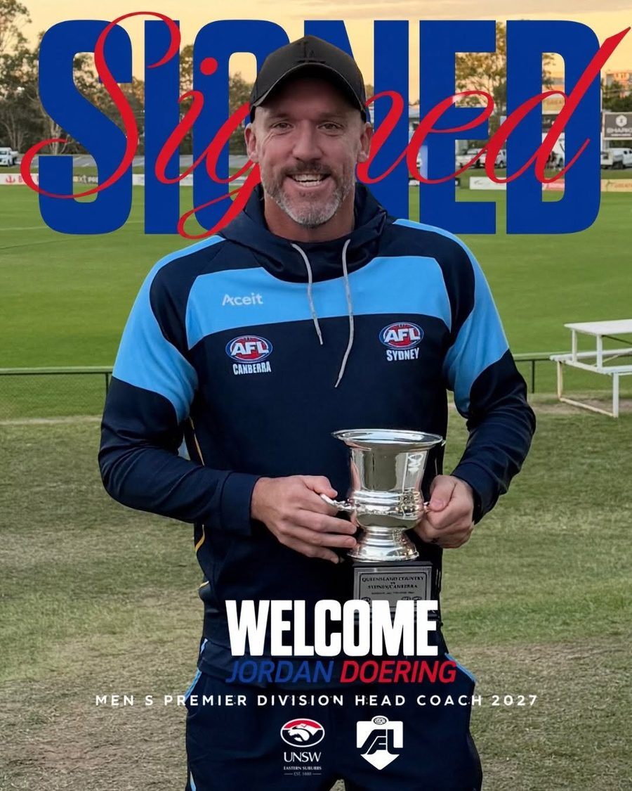

Jordan Doering named Inaugural SFL Men's Head Coach
A former Carlton player who has coached since 2007, from country footy to state representative football, Jordan Doering will lead the Bulldogs men into the club's first Sydney Football League season.

The UNSW-ES Bulldogs are proud to confirm Jordan Doering as the club's Inaugural SFL Men's Head Coach. "Jordy" brings an AFL playing career, two decades in senior football and coaching experience at almost every level of the game to the club's foundation season in the SFL.
The player
A Bendigo product, Doering came through Sandhurst and the Bendigo Pioneers before spending time on Essendon's list, where he was part of an AFL reserves premiership. He went on to play 18 AFL games, kicking 11 goals, with Carlton in 2001 and 2002.
After Carlton he became one of the VFL's most consistent players. A season with the Tasmanian Devils was followed by three years at the Bendigo Bombers, where he was vice-captain and won the club best and fairest twice. He then played local football in Melbourne with Strathmore, on the Gold Coast with Labrador and in country Victoria with Sea Lake, winning premierships along the way.
The coach
Jordy's coaching career started while he was still playing, as an assistant coach at Strathmore in the Essendon District league, including their 2011 premiership. He was senior coach of Sea Lake in 2016, and built his development credentials as an assistant with the Northern Knights in the TAC Cup, midfield coach of the Vic Metro under-18 state side, and line coach with North Melbourne's VFL team.
In Canberra he joined Ainslie as a player in 2019, became senior assistant in 2020 and was senior coach in 2021 and 2022. He led a rebuild of one of the competition's powerhouse clubs, and the club credited him with bringing players back from country football. Along the way he also worked with the North Queensland Cowboys in the NRL on their kicking game.
Representative football
In 2026 he was on the coaching panel for the AFL Sydney-Canberra men's representative side, as an assistant to West Coast Eagles great and inaugural Gold Coast Suns coach Guy McKenna, for the July clash with Queensland Country on the Gold Coast.
Now at the Bulldogs
Jordy takes charge of the Bulldogs' men's program as the club enters the Sydney Football League. Pre-season is already under way on Monday nights at Robertson Road Fields, Centennial Park, and Round 1 is Saturday 3 April 2027.
Welcome to the kennel, Jordy.